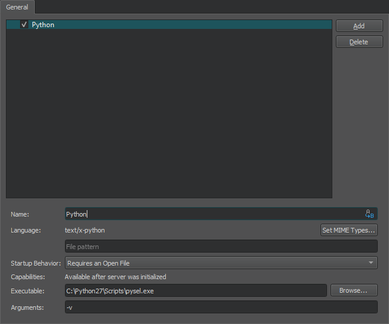

Using Language Servers
For several programming languages, a language server is available that provides information about the code to IDEs as long as they support communication via the language server protocol (LSP). This enables the IDE to provide the following services:
- Code completion
- Highlighting the symbol under cursor
- Navigating in the code by using the locator or moving to the symbol definition
- Inspecting code by viewing the document outline
- Finding references to symbols
- Code actions
- Integrating diagnostics from the language server
By providing a client for the language server protocol, Qt Creator can support the above features for several other programming languages besides C++. However, the client does not support language servers that require special handling.
Adding MIME Types for Language Servers
Qt Creator uses the MIME type of the file to determine which language server to request information from when you open a file for editing. Add new MIME types or file patterns to match language servers. If you do not set at least one MIME type or file pattern, no files will be sent to the language server. This is done to avoid unnecessary traffic and inaccurate information, as files are only sent to the languge server if they are known to be handled by it. For more information about how Qt Creator uses MIME types, see Editing MIME Types.
Specifying Settings for Language Clients
To use a language server:
- Select Tools > Options > Language Client (or Qt Creator > Preferences > Language Client > on macOS) to view a list of language servers.

- Select the check box next to the language server name to enable the language server.
- Select Add to add language servers.
- In the Name field, enter a name for the language server. Select the
 (Variables) button to use a variable for the server name. For more information, see Using Qt Creator Variables.
(Variables) button to use a variable for the server name. For more information, see Using Qt Creator Variables. - In the Language field, select Set MIME Types to select the MIME types of the files to send to the language server. In the field below, you can enter file patterns to extend the MIME types, separated by semicolons.
- In the Startup behavior field, select whether the language server is started when Qt Creator starts or when a project or file with a matching MIME type is opened. The General Messages output pane displays information about the connection to the language server.
- In the Capabilities field, you can see the features that are supported by the language server. Only some of them are implemented by Qt Creator.
- In the Executable field, enter the path to the language server executable.
- In the Arguments field, enter any required command line arguments. Select Variables to use variables as arguments.
To remove language servers from the list, select Delete.
Supported Locator Filters
The locator enables you to browse not only files, but any items defined by locator filters. The language client plugin supports the following locator filters:
- Locating symbols in the current project (
:) - Locating symbols in the current document (
.) - Locating class (
c), enum, and function (m) definitions in your project
Reporting Issues
The language service client has been mostly tested with Python. If problems arise when you try it or some other language, please select Help > Report Bug to report them in the Qt Bug Tracker. The reports should include Qt Creator console output with the environment variable QT_LOGGING_RULES=qtc.languageclient.*=true set.